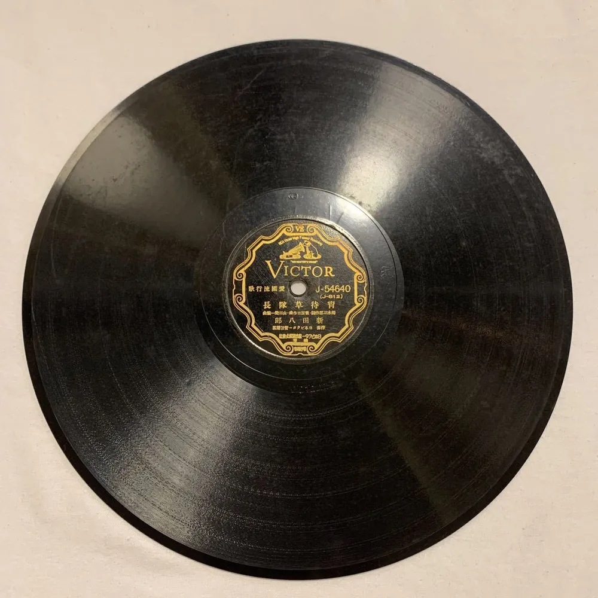
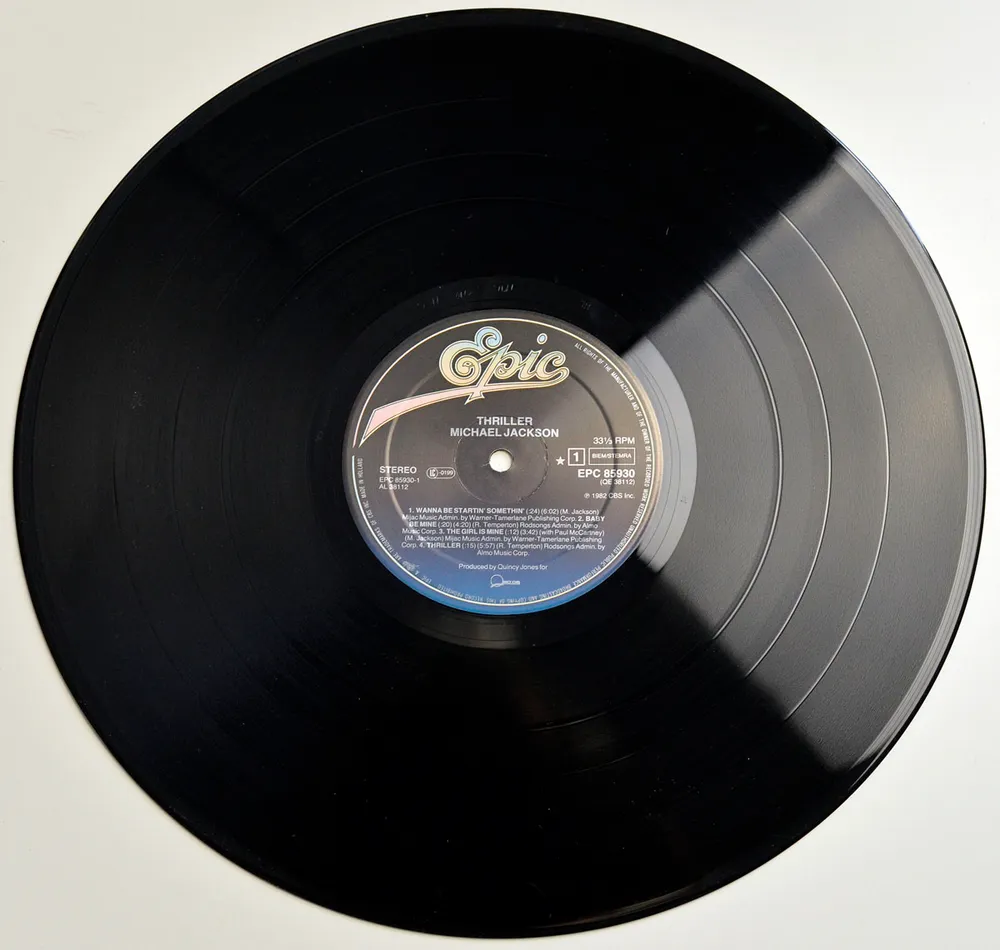
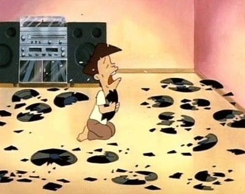

이 장면에서 둘리 일당이 깨먹은 레코드는 'LP판'이 아님.

해당 음반의 정체는 'SP'판으로 일명 '돌판'으로 불리는 레코드인데...
이게 락깍지벌레의 분비물로 만든 '셸락' 재질이라 단단하지만 무르고 충격에 약함

반면 당시 주류였던 'LP판'은 '폴리염화 비닐 (PVC)'이란 플라스틱 재질로 만들어졌음.

여기서 80년대에도 SP판은 LP판에 밀려 희귀해졌으니...
둘리 일당이 더 비싼 물건을 깨먹었다는 결론이 나옴
댓글
수집 당시 댓글 35개
윤아 · 5 시간 전
· 익명
맞습니다...
쌀라면 · 5 시간 전
· 익명
으악!!
아찬 · 5 시간 전
몇십만원 하는것도 꽤 있더라
· 익명
맞습니다...
착한말착한말 · 5 시간 전
단단하지만 무르다는게 무슨말이죠
· 익명
충격을 주면 무르다는겁니다..
· 유륜질싸갈비 · 5 시간 전
야추 같네요
· 익명
올ㅋ
· 베데엔차 · 5 시간 전
강성도 취성도 높다?
· 익명
맞네요...
· 선행정법 · 5 시간 전
유리같다는 뜻인데 말을 좀 잘못 쓴게 아닌가 싶음.
딱딱하지만 생각만큼 단단하지도 않고 휘어지지도 못하는 그런
· 익명
맞습니다... 설명 잘못했네요...
· 6Soo · 5 시간 전
유리가 무르진 않잖아
· 익명
올ㅋ
· SeinundZeit · 4 시간 전
공학에서는 이걸 강도(Strength)와 전성(Ductility)으로 구분함. 단단함과 무름은 강도의 영역이고, 전성은 "외력에 의해 변형되는 정도"임. 그리고 여기서 말해지는 "깨짐(파괴)"은 Strength의 문제가 아니고 Ductility의 문제임. 고무 공을 "깨트리기"는 어렵지만 유리 구슬을 깨트리는 일은 아주 쉽잖아? <단단하지만> <잘 깨지는> 재료의 대표격이 유리지.
· 익명
설명 감사합니다!
· 큐쓰 · 4 시간 전
<잘 깨지는/>
· 1032기 · 4 시간 전
무르다와 단단하다는 상충되는 개념인데...
무르다, 단단하지 않고 잘 깨어지지 않다 = 취성도가 낮다
힘을 받아도 늘어나거나 휘지 않고 단단하며 탄성 한계를 넘어서면 갑자기 부서진다 = 취성도가 높다.
'단단하지만 충격에 약함' 이 맞는거같아요..
sax · 4 시간 전
와씨 우는거 슬퍼보이네
· 익명
맞습니다..
밤귀신 · 4 시간 전
어릴적에 집에 저거 있었던것 같은데. LP판은 만져보면 말랑말랑해서 안깨질것 같고 저건 뭔가 디스크마냥 깨질것 같은 질감이었지.
· 익명
오.. 정보 감사합니다!
바나나맛분유 · 4 시간 전
죽여야해
· 익명
공감합니다...
상냥퍼리소녀 · 4 시간 전
또치 개꼴리네
· 익명
으악
이해를못하겠어 · 4 시간 전
도우너가 되돌리는거 못하나?
· 익명
깐따삐야!
게이브뉴웰 · 4 시간 전
· 익명
헉...
헤디바디 · 4 시간 전
고길동 부자였네...
니말이맞습니다 · 4 시간 전
왜 호잇하고 안고쳐주냐
지하왕국 · 4 시간 전
호잇 한 번이면 고쳐질텐데 빌어먹을 둘리놈이네 진짜